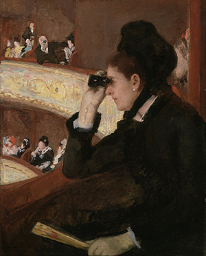
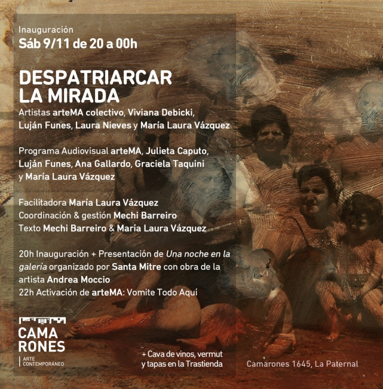

Proyecto de investigación - Facultad de Arquitectura, Diseño y Urbanismo, Universidad de Buenos Aires.
Directora: María Laura Vázquez
Miembros: Melanie Rozin, Paz Bustamante, Sofía Rocha, Guadalupe Sierra, Agustina Isidori y Julieta Caputo

In the loge - Mary Cassat
Despatriarcar la mirada es una plataforma de investigación que nace en la Facultad de Arquitectura, Diseño y Urbanismo de la Universidad de Buenos Aires, bajo la dirección de María Laura Vázquez. Cada vez que se pone en acción, Despatriarcar toma la forma de la urgencia: es muestra, taller, jornada de producción, charla abierta, proyecto de tesis, etc. Lo que en definitiva construye este ambicioso proyecto es una gran red, que conecta transversalmente los cuerpos, las generaciones, las disciplinas y los quehaceres artísticos, intelectuales y domésticos.
Para pensar en cuál es la materia prima con la que se teje esta red, partimos de la pregunta que se hace Linda Nochlin en su texto de 1971 “¿Por qué no hay grandes mujeres artistas?”. La historiadora va a argumentar que para tratar de formular una respuesta hay que mirar las condiciones de producción a las que las mujeres fueron sometidas durante siglos y que sirvieron de motivo para caracterizar sus poéticas como menores. Esta excusa histórica que ha servido para invisibilizar las prácticas artísticas de las mujeres tiene su origen en el punto de vista desde el que estamos configurados para mirar el mundo; dicho de otro modo, es el resultado de ser reguladxs por un marco teórico patriarcal.
En la búsqueda por desestabilizar esta estructura, abrazamos los márgenes a los que somos empujadxs. Tensionamos ese centro cuestionando los mecanismos que han permitido y que, aún bien adentrados en el siglo XXI, siguen habilitando a que el arte producido por mujeres y otras identidades disidentes todavía sea embestido de adjetivos valorativos cuando se lo busca problematizar. Es desde estos márgenes que entrecruzamos nuestras historias, favoreciendo la reflexión sobre las propias contradicciones y rebalsando en preguntas que aún luchamos por formular. Desplegamos esta red para invitar a la reconstrucción en comunidad, buscando establecer vínculos estéticos y políticos que resuenen en nuestro territorio.
Texto:María Laura Vázquez y Mercedes Barreiro

Decolonizing the patriarchal gaze, sensitive articulations of resistance
Research group - Architecture, Design and Urbanism School, University of Buenos Aires
Director: María Laura Vázquez
Research members: Melanie Rozin, Paz Bustamante, Sofía Rocha, Guadalupe Sierra, Agustina Isidori and Julieta Caputo
Decolonizing the patriarchal gaze is a research platform that was created in the Architecture, Design and Urbanism School of the University of Buenos Aires, under the direction of María Laura Vázquez. Each time the platform is activated, it takes a form of urgency: it’s an exhibition, a workshop, a production session, a lecture, a thesis, etc. What ultimately builds this ambitious project is a great network, which transversely connects bodies, generations, disciplines and artistic, intellectual and domestic tasks.
To understand what’s the raw material with which this network is made, we began with the question that Linda Nochlin asked herself in her text from 1971 “Why have there been no great female artists?” The art historian stated that to arrive at an answer it’s necessary to contemplate the conditions in which women created their artworks; conditions to which they were subjected for centuries and that have permitted to identify women’s artworks as minor artworks. This historical excuse, that has worked for the invisibilization of women’s artistic practices, has its origin in the way from which we are configured to look at the world; in other words, it’s the result of being regulated by a patriarchal theoretical framework.
Intending to destabilize this structure, we embrace the margins to which we are being pushed out. We tense that center questioning the mechanisms that have allowed and, still nowadays running the 21st century, continue to enable that artworks made by women and other dissidences be attacked with evaluative adjectives when they are sought to be analysed. From these margins we cross our paths, allowing us to reflect on our own contradictions and overflowing with interrogations that we are still fighting to define. We have created this network to encourage the development of reconstruction within the community, seeking the possibility to establish aesthetic and political bonds in our territories.
Written by María Laura Vázquez y Mercedes Barreiro